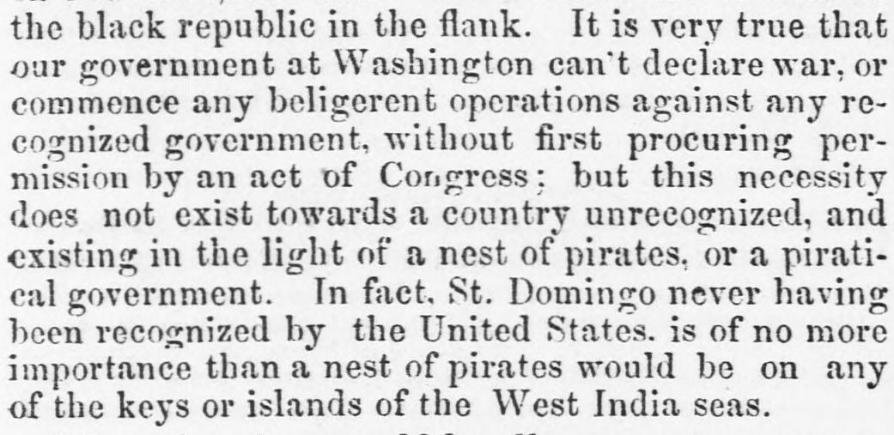
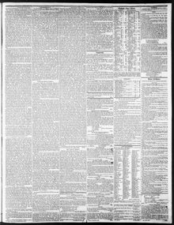

What, therefore, could legally prevent a concentration of the vesselsQué, por tanto, podría impedir legalmente una concentración de los buques
Wilmington Journal. Wilmington, N.C., April 25, 1851. Page 3. Published by Alfred L. Price and David Fulton. A weekly newspaper, 1844–1895.Wilmington Journal. Wilmington, N.C., 25 de abril de 1851. Página 3. Publicado por Alfred L. Price and David Fulton. Periódico semanal, 1844–1895. View the originalVer el original


See the full pageVer la página completaThe Wilmington Journal reported on April 25, 1851, that because St. Domingo (the Dominican Republic) was unrecognized by the United States, it was regarded as a piratical government rather than a nation requiring an act of Congress for military action. The newspaper suggested that U.S. vessels fitted out at Norfolk and New York could join other American ships to demand redress from the "emperor" of Hayti or demolish his regime. Additionally, it noted rumors that expeditions from the Southern States purportedly bound for Cuba were likely intended to land on the Dominican part of the island to assist the Dominicans and revolutionize the social and political condition of the blacks.El Wilmington Journal comunicó el 25 de abril de 1851 que, por carecer de reconocimiento oficial por parte de Estados Unidos, Santo Domingo (la República Dominicana) era conceptuado más bien como un gobierno pirático que como una nación formal que demandase una ley del Congreso para emprender acciones militares. La hoja apuntaba que buques de guerra estadounidenses alistados en Norfolk y Nueva York podrían concurrir con otras unidades navales para exigir satisfacciones al «emperador» de Haití o derribar su régimen. Recogía además comentarios de que expediciones armadas procedentes de los estados del Sur, supuestamente destinadas a Cuba, tendrían por objeto desembarcar en la parte dominicana para auxiliar a los naturales y trastocar el ordenamiento político y social de las poblaciones negras.
FULL TEXT:TEXTO COMPLETO:
Wilmington Journal April 25, 185125 de abril de 1851
while the adventurers from the Southern States may effect a landing on Dominica, and unite with those forces to assault the black republic in the flank. It is very true that our government at Washington can't declare war, or commence any beligerent operations against any recognized government, without first procuring permission by an act of Congress; but this necessity does not exist towards a country unrecognized, and existing in the light of a nest of pirates, or a piratical government. In fact, St. Domingo never having been recognized by the United States, is of no more importance than a nest of pirates would be on any of the keys or islands of the West India seas.la república negra en el flanco. Es muy cierto que nuestro gobierno en Washington no puede declarar la guerra, o comenzar operación beligerante alguna contra cualquier gobierno reconocido, sin primero procurar permiso por un acto del Congreso; pero esta necesidad no existe hacia un país no reconocido, y existente a la luz de un nido de piratas, o un gobierno pirático. En efecto, Santo Domingo nunca habiendo sido reconocido por los Estados Unidos, no tiene más importancia que un nido de piratas tendría en cualquiera de los cayos o islas de los mares de las Indias Occidentales.